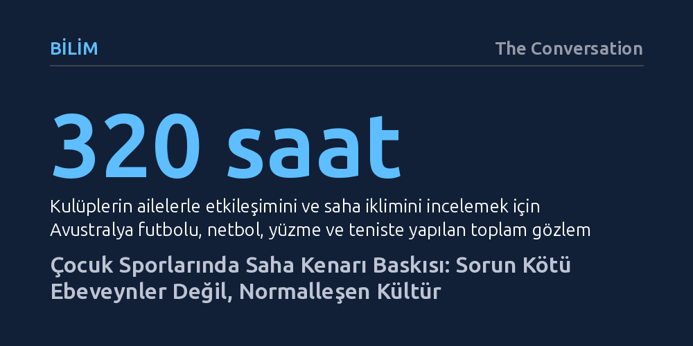

BILIM · The Conversation · 2026-09-08
Araştırmalar, çocuk sporlarında yaş büyüdükçe artan saha kenarı saldırganlığının münferit ebeveyn kusurlarından değil, rekabet ortamında normalleşen kültürden kaynaklandığını gösteriyor. Çözüm tek taraflı cezalar değil; kulüplerin ailelerle kurduğu bağ ve sahada pekiştirilen olumlu iklimdir.
Saha kenarındaki taşkınlıkların birkaç sorunlu velinin eseri olmadığını, yetişkinlerin çevreyi gözlemleyerek benimsediği kurumsal ve kültürel bir öğrenme sürecinden beslendiğini gösterir.

Çocuklar beş veya altı yaşlarında spora başladığında yetişkinlerin verdiği mesaj son derece açıktır: eğlenmek, denemek ve arkadaşlarla güzel vakit geçirmek. Saha kenarındaki atmosfer de bu doğrultuda teşvik, övgü ve aile sıcaklığıyla şekillenir. Ancak yaş grupları ilerledikçe skor tabelası daha fazla önem kazanır, oyuncular birbiriyle kıyaslanır, seçmeler başlar ve şampiyonluk finalleri yaklaşır.
Genç ragbi liginde saha kenarı davranışlarını inceleyen saha çalışmaları, yaş büyüdükçe teşviklerin yerini küfür, sert eleştiri ve saldırgan tutumlara bıraktığını belgeliyor. Çocukların büyümesi kendi başına bu bozulmaya yol açmaz; değişen şey, çocukların etrafındaki yetişkinlerin rekabeti algılama biçimidir. Küçük yaşlarda yadırganacak tepkiler, zamanla 'rekabetçi olmanın' kaçınılmaz bir gereği gibi kabul görmeye başlar. Bu yoğun baskı ise genç sporcuları oyundan soğutarak sporu bırakma noktasına getirir.
Saha kenarındaki bu olumsuz dönüşümün temelinde sosyal öğrenme kuramı yatar. İnsanlar kuralları sadece kitapçıklardan değil, çevrelerinde hangi eylemlerin onaylandığını veya görmezden gelindiğini izleyerek öğrenir. Çocuklara hakeme saygı duymaları öğütlenirken, tribündeki yetişkinlerin her hafta hakem kararlarına açıkça tepki gösterip bağırması, çocukların zihninde asıl kalıcı dersi oluşturur.
Bu mekanizma yetişkinler için de geçerlidir. Veliler diğer velileri gözlemler, antrenörün saha kenarındaki öfkesini ya da sakinliğini örnek alır ve kulübün hangi sınırlara göz yumduğunu kaydeder. Zamanla, başlangıçta rahatsız edici bulunan davranışlar sıradanlaşır. Üstelik saha kenarı baskısı yalnızca tel örgüler ardından bağırmaktan ibaret değildir. Maç bitiminde arabada çocuğun performansını acımasızca eleştirmek veya ebeveyn ilgisini alınan skora göre ayarlamak gibi çok daha sinsi ve psikolojik yollarla da kendini gösterir.
Spor camiasının saha kenarındaki gerginliklere karşı başvurduğu refleks genellikle aynıdır: panolara davranış kuralları asmak, yeni bir farkındalık kampanyası duyurmak, para cezaları veya saha giriş yasakları getirmek. Elbette kuralları ağır biçimde ihlal edenlerin bir yaptırımla karşılaşması şarttır; fakat ceza mekanizması davranış gerçekleştikten çok sonra devreye girer.
Yıllardır yürütülen spor ebeveynliği araştırmaları, insanlara yalnızca nasıl davranmaları gerektiğini söylemenin kalıcı bir dönüşüm sağlamadığını açıkça ortaya koyuyor. Bilgilendirme afişleri asmakla zihniyet değiştirmek aynı şey değildir. Meseleyi sadece 'kötü ebeveynler' sorununa indirgemek, bireyleri bu tür davranışlara iten veya bunu normalleştiren kulüp ortamını görünmez kılar.
2025 yılında yayımlanan ve 320 saatlik saha gözlemi ile 41 veli, antrenör ve yönetici mülakatını kapsayan bir çalışma, sorunun kökenine dair kritik bir eksikliği gün yüzüne çıkardı. Avustralya futbolu, yüzme, netbol ve tenis branşlarında 10-17 yaş kategorilerini inceleyen araştırma, kulüplerin sezon başında ailelerle neredeyse hiçbir yüz yüze etkileşim kurmadığını tespit etti. Kulüp-aile teması çoğunlukla kayıt formları, aidat ödemeleri ve duyuru e-postalarından ibaret kalıyordu.
Oysa veliler birer müşteri gibi görülmek yerine kulübe samimiyetle kabul edilmek, antrenörleriyle tanışmak, kaygılarını paylaşabilmek ve çabalarının takdir edildiğini hissetmek istiyor. Aileleri en baştan ortak bir kültüre dahil etmeyen bir yapının, onlardan sahada olgunluk beklemesi gerçekçi değildir. Saldırganlığı normalleştiren sosyal mekanizmalar, doğru işletildiğinde saygı ve yapıcı desteği de norm haline getirebilir. Asıl hedef daha fazla veliyi disiplin kuruluna sevk etmek değil, olumlu katılımı sahadaki en kolay ve doğal davranış kılmaktır.